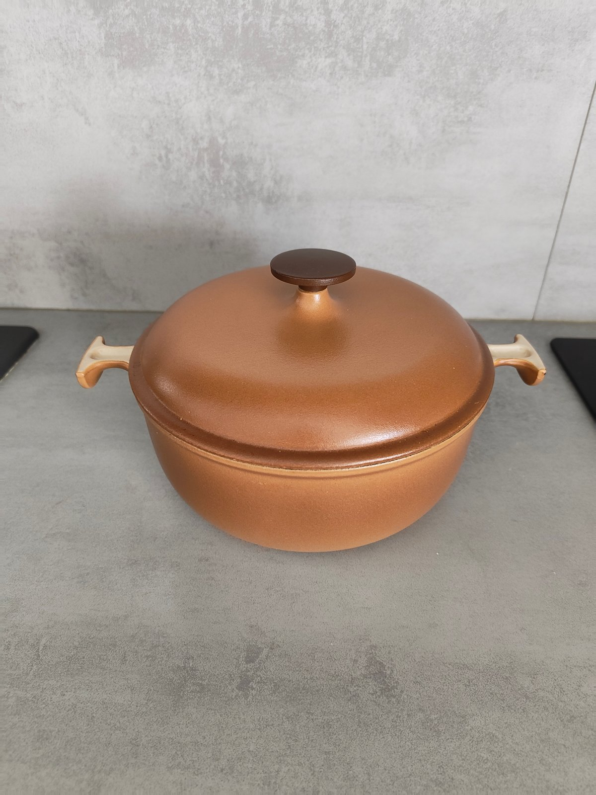
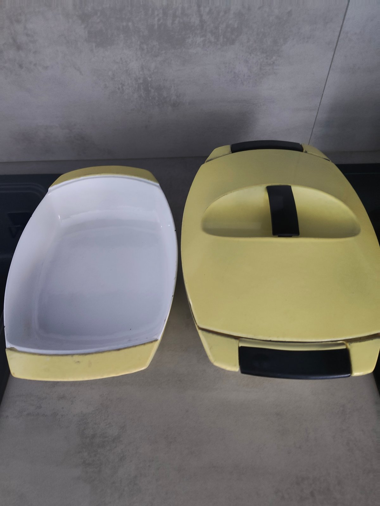
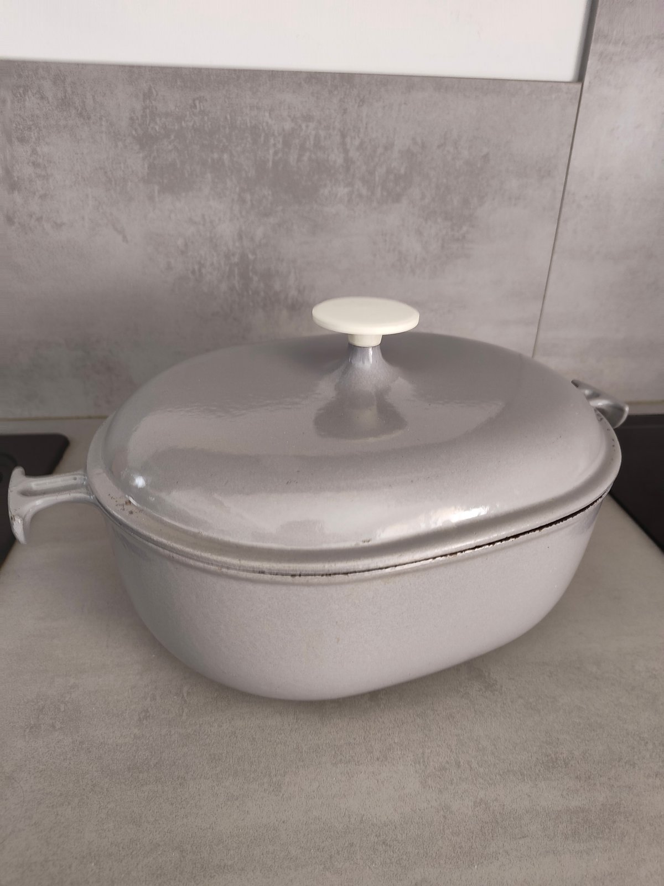

Pièces de designer : Enzo Mari et Raymond Loewy
Le Creuset a travaillé avec des designers industriels dont les pièces sont aujourd’hui collectionnées pour elles-mêmes. La Coquelle de Raymond Loewy, un récipient oblong aux extrémités biseautées, figure dans la collection design du Centre Pompidou ; le Musée des Arts Décoratifs de Paris conserve la cocotte La Mama d’Enzo Mari.
Voici les pièces de designer actuellement disponibles dans notre collection. Notre guide Le Creuset explique ce qui distingue chaque modèle et comment les musées les datent.
Disponible maintenant (8)

Cocotte vintage Le Creuset « La Mama » par Enzo Mari – Taille 20 – Fabriquée en France
105€

Rare Coquelle Le Creuset Raymond Loewy vintage n° 45 avec plat et couvercle assortis
140€

Plat vintage Le Creuset « La Mama » par Enzo Mari – Taille 29 – Fabriqué en France
95€

Casserole / cocotte vintage Le Creuset Enzo Mari – Design rare – Fabriquée en France
65€

Cocotte vintage Enzo Mari en fonte taille 29 – Émail gris – Fabriquée en France – Ustensile de designer
130€

Cocotte ovale « Mama » d'Enzo Mari, Le Creuset, fonte émaillée, France
450€

Plat ovale « Mama » d'Enzo Mari, Le Creuset, fonte émaillée, France
350€

Cocotte La Coquelle de Raymond Loewy, Le Creuset, fonte émaillée, France
475€
Plus de la collection
Le Creuset vintage · Cousances vintage · Toutes les pièces disponibles · Pièces déjà vendues